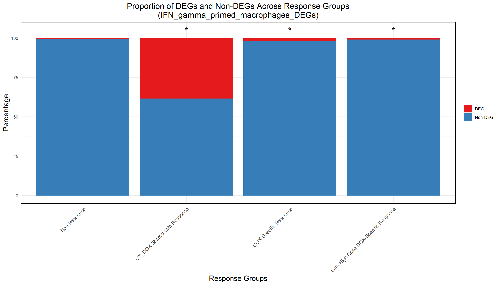
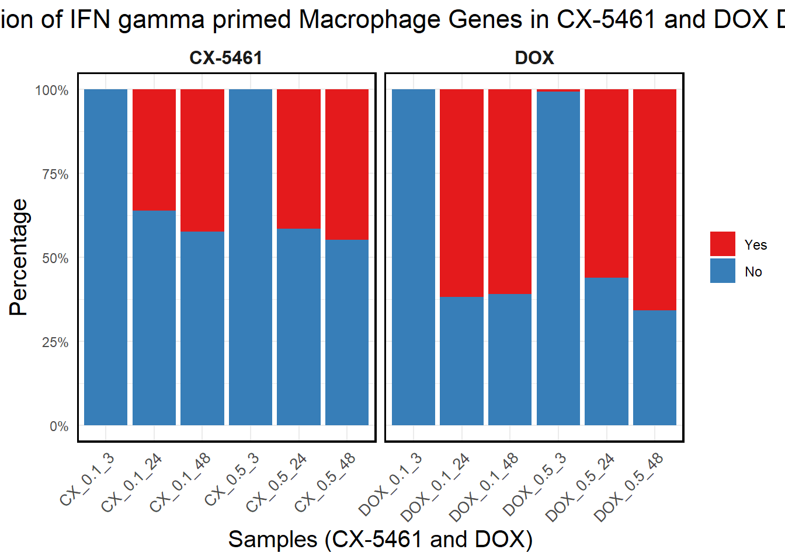
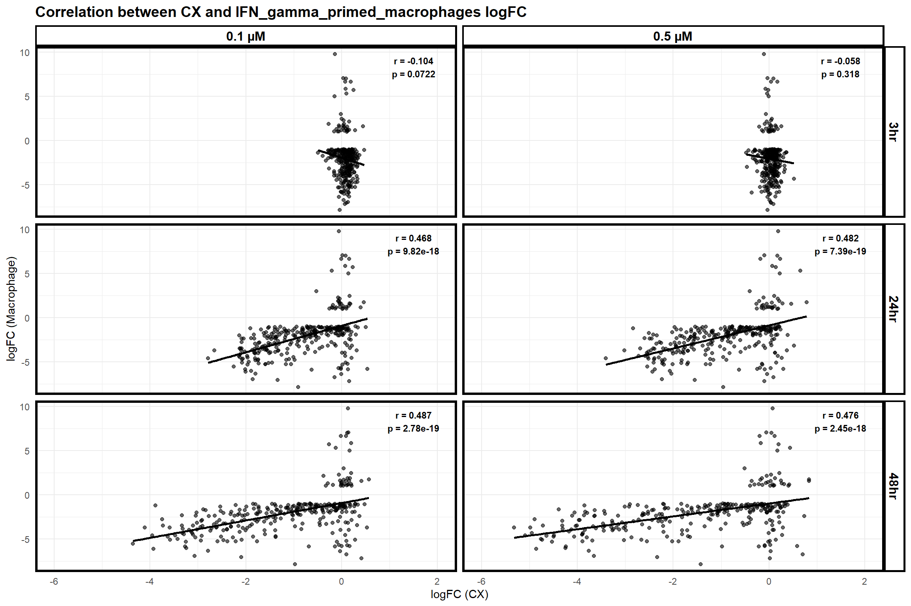
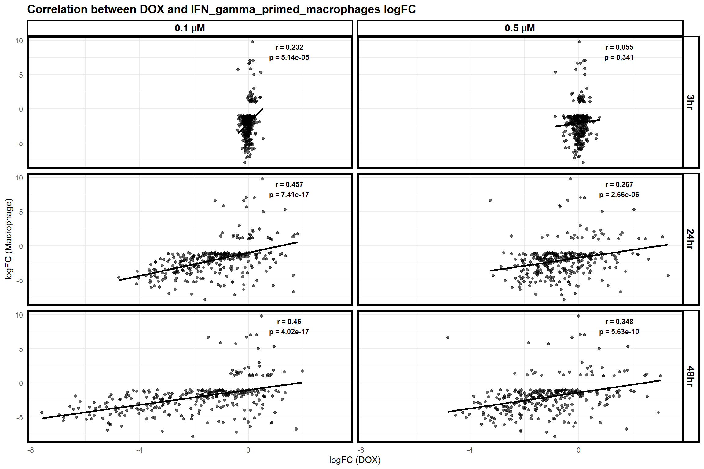

Macrophage dataset comparison
Last updated: 2025-03-06
Checks: 6 1
Knit directory: CX5461_Project/
This reproducible R Markdown analysis was created with workflowr (version 1.7.1). The Checks tab describes the reproducibility checks that were applied when the results were created. The Past versions tab lists the development history.
The R Markdown file has unstaged changes. To know which version of
the R Markdown file created these results, you’ll want to first commit
it to the Git repo. If you’re still working on the analysis, you can
ignore this warning. When you’re finished, you can run
wflow_publish to commit the R Markdown file and build the
HTML.
Great job! The global environment was empty. Objects defined in the global environment can affect the analysis in your R Markdown file in unknown ways. For reproduciblity it’s best to always run the code in an empty environment.
The command set.seed(20250129) was run prior to running
the code in the R Markdown file. Setting a seed ensures that any results
that rely on randomness, e.g. subsampling or permutations, are
reproducible.
Great job! Recording the operating system, R version, and package versions is critical for reproducibility.
Nice! There were no cached chunks for this analysis, so you can be confident that you successfully produced the results during this run.
Great job! Using relative paths to the files within your workflowr project makes it easier to run your code on other machines.
Great! You are using Git for version control. Tracking code development and connecting the code version to the results is critical for reproducibility.
The results in this page were generated with repository version 0aec578. See the Past versions tab to see a history of the changes made to the R Markdown and HTML files.
Note that you need to be careful to ensure that all relevant files for
the analysis have been committed to Git prior to generating the results
(you can use wflow_publish or
wflow_git_commit). workflowr only checks the R Markdown
file, but you know if there are other scripts or data files that it
depends on. Below is the status of the Git repository when the results
were generated:
Ignored files:
Ignored: .RData
Ignored: .Rhistory
Ignored: .Rproj.user/
Unstaged changes:
Modified: analysis/Macrophage.Rmd
Note that any generated files, e.g. HTML, png, CSS, etc., are not included in this status report because it is ok for generated content to have uncommitted changes.
These are the previous versions of the repository in which changes were
made to the R Markdown (analysis/Macrophage.Rmd) and HTML
(docs/Macrophage.html) files. If you’ve configured a remote
Git repository (see ?wflow_git_remote), click on the
hyperlinks in the table below to view the files as they were in that
past version.
| File | Version | Author | Date | Message |
|---|---|---|---|---|
| Rmd | 07caa2f | sayanpaul01 | 2025-03-05 | Commit |
| html | 07caa2f | sayanpaul01 | 2025-03-05 | Commit |
| Rmd | 10d28dd | sayanpaul01 | 2025-03-05 | Commit |
| html | 10d28dd | sayanpaul01 | 2025-03-05 | Commit |
| Rmd | 46aa22b | sayanpaul01 | 2025-03-01 | Commit |
| html | 46aa22b | sayanpaul01 | 2025-03-01 | Commit |
📌 Proportion of Macrophage DE genes in Corrmotif clusters
📌 Load Required Libraries
library(ggplot2)Warning: package 'ggplot2' was built under R version 4.3.3library(dplyr)Warning: package 'dplyr' was built under R version 4.3.2library(tidyr)Warning: package 'tidyr' was built under R version 4.3.3library(org.Hs.eg.db)Warning: package 'AnnotationDbi' was built under R version 4.3.2Warning: package 'BiocGenerics' was built under R version 4.3.1Warning: package 'Biobase' was built under R version 4.3.1Warning: package 'IRanges' was built under R version 4.3.1Warning: package 'S4Vectors' was built under R version 4.3.1library(clusterProfiler)Warning: package 'clusterProfiler' was built under R version 4.3.3library(biomaRt)Warning: package 'biomaRt' was built under R version 4.3.2library(gprofiler2)Warning: package 'gprofiler2' was built under R version 4.3.3library(AnnotationDbi)📌 Load Data
# Read the file
file_path <- "data/Macrophage/IFN_gamma_primed_macrophages_DEGs.csv"
IFN_gamma_primed_macrophages_DEGs <- read.csv(file_path, header = TRUE)
# Extract rat gene symbols (replace "Symbol" with the actual column name for gene symbols)
rat_genes <- IFN_gamma_primed_macrophages_DEGs$Symbol
# Map rat gene symbols to human homologs
homologs <- gorth(query = rat_genes,
source_organism = "rnorvegicus", # Rat organism code
target_organism = "hsapiens") # Human organism code
macrophage_new<- data.frame(homologs$ortholog_name)
# Map gene symbols to Entrez IDs using org.Hs.eg.db
macrophage_new <- macrophage_new %>%
mutate(Entrez_ID = mapIds(org.Hs.eg.db,
keys = homologs.ortholog_name,
column = "ENTREZID",
keytype = "SYMBOL",
multiVals = "first"))📌 Proportion of DE genes across response groups
# Load the saved datasets
prob_all_1 <- read.csv("data/prob_all_1.csv")$Entrez_ID
prob_all_2 <- read.csv("data/prob_all_2.csv")$Entrez_ID
prob_all_3 <- read.csv("data/prob_all_3.csv")$Entrez_ID
prob_all_4 <- read.csv("data/prob_all_4.csv")$Entrez_ID
# Example Response Groups Data (Replace with actual data)
response_groups <- list(
"Non Response" = prob_all_1, # Replace 'prob_all_1', 'prob_all_2', etc. with your actual response group dataframes
"CX_DOX Shared Late Response" = prob_all_2,
"DOX-Specific Response" = prob_all_3,
"Late High Dose DOX-Specific Response" = prob_all_4
)
# Combine response groups into a single dataframe
response_groups_df <- bind_rows(
lapply(response_groups, function(ids) {
data.frame(Entrez_ID = ids)
}),
.id = "Set"
)
# Step 2: Match Overlap Genes with Response Groups
# Classify genes as DEG (match) or Non-DEG (no match)
response_groups_df <- response_groups_df %>%
mutate(
DEG_Status = ifelse(Entrez_ID %in% macrophage_new$Entrez_ID, "DEG", "Non-DEG")
)
# Step 3: Calculate Proportions
proportion_data <- response_groups_df %>%
group_by(Set, DEG_Status) %>%
summarize(Count = n(), .groups = "drop") %>%
group_by(Set) %>%
mutate(Percentage = (Count / sum(Count)) * 100)
# Step 4: Perform Chi-Square Tests (Refactored Version)
# Get counts for the Non Response group
non_response_counts <- proportion_data %>%
filter(Set == "Non Response") %>%
dplyr::select(DEG_Status, Count) %>%
{setNames(.$Count, .$DEG_Status)} # Create named vector for Non Response counts
# Perform chi-square test for selected response groups
chi_results <- proportion_data %>%
filter(Set != "Non Response") %>% # Exclude "Non Response"
group_by(Set) %>%
summarize(
p_value = {
# Extract counts for the current response group
group_counts <- Count[DEG_Status %in% c("DEG", "Non-DEG")]
# Ensure there are no missing categories, fill with 0 if missing
if (!"DEG" %in% DEG_Status) group_counts <- c(group_counts, 0)
if (!"Non-DEG" %in% DEG_Status) group_counts <- c(0, group_counts)
# Create contingency table
contingency_table <- matrix(c(
group_counts[1], group_counts[2],
non_response_counts["DEG"], non_response_counts["Non-DEG"]
), nrow = 2, byrow = TRUE)
# Debugging: Print the contingency table
print(paste("Set:", unique(Set)))
print("Contingency Table:")
print(contingency_table)
# Perform chi-square test
if (all(contingency_table >= 0 & is.finite(contingency_table))) {
chisq.test(contingency_table)$p.value
} else {
NA
}
},
.groups = "drop"
) %>%
mutate(Significance = ifelse(!is.na(p_value) & p_value < 0.05, "*", ""))
# Step 5: Merge Results and Plot Proportions
# Merge chi-square results back into proportion data
proportion_data <- proportion_data %>%
left_join(chi_results %>% dplyr::select(Set, Significance), by = "Set")
# Define the correct order for response groups
response_order <- c(
"Non Response",
"CX_DOX Shared Late Response",
"DOX-Specific Response",
"Late High Dose DOX-Specific Response"
)
proportion_data$Set <- factor(proportion_data$Set, levels = response_order)
# Plot proportions with significance stars
ggplot(proportion_data, aes(x = Set, y = Percentage, fill = DEG_Status)) +
geom_bar(stat = "identity", position = "stack") +
geom_text(
data = proportion_data %>% distinct(Set, Significance),
aes(x = Set, y = 105, label = Significance), # Position stars above bars
inherit.aes = FALSE,
size = 6,
color = "black",
hjust = 0.5
) +
scale_fill_manual(values = c("DEG" = "#e41a1c", "Non-DEG" = "#377eb8")) +
labs(
title = "Proportion of DEGs and Non-DEGs Across Response Groups\n(IFN_gamma_primed_macrophages_DEGs)",
x = "Response Groups",
y = "Percentage",
fill = "Category"
) +
theme_minimal() +
theme(
plot.title = element_text(size = rel(1.5), hjust = 0.5),
axis.title = element_text(size = 15, color = "black"),
axis.text.x = element_text(size = 10, angle = 45, hjust = 1),
legend.title = element_blank(),
panel.border = element_rect(color = "black", fill = NA, linewidth = 1.2)
)Warning: Removed 1 row containing missing values or values outside the scale range
(`geom_text()`).
| Version | Author | Date |
|---|---|---|
| 46aa22b | sayanpaul01 | 2025-03-01 |
📌 Proportion of Macrophage genes in CX and DOX DEGs
# Load necessary libraries
library(dplyr)
library(ggplot2)
library(tidyr)
library(org.Hs.eg.db)
library(AnnotationDbi)
# Load DEGs Data
CX_0.1_3 <- read.csv("data/DEGs/Toptable_CX_0.1_3.csv")
CX_0.1_24 <- read.csv("data/DEGs/Toptable_CX_0.1_24.csv")
CX_0.1_48 <- read.csv("data/DEGs/Toptable_CX_0.1_48.csv")
CX_0.5_3 <- read.csv("data/DEGs/Toptable_CX_0.5_3.csv")
CX_0.5_24 <- read.csv("data/DEGs/Toptable_CX_0.5_24.csv")
CX_0.5_48 <- read.csv("data/DEGs/Toptable_CX_0.5_48.csv")
DOX_0.1_3 <- read.csv("data/DEGs/Toptable_DOX_0.1_3.csv")
DOX_0.1_24 <- read.csv("data/DEGs/Toptable_DOX_0.1_24.csv")
DOX_0.1_48 <- read.csv("data/DEGs/Toptable_DOX_0.1_48.csv")
DOX_0.5_3 <- read.csv("data/DEGs/Toptable_DOX_0.5_3.csv")
DOX_0.5_24 <- read.csv("data/DEGs/Toptable_DOX_0.5_24.csv")
DOX_0.5_48 <- read.csv("data/DEGs/Toptable_DOX_0.5_48.csv")
# Extract Significant DEGs
DEG1 <- as.character(CX_0.1_3$Entrez_ID[CX_0.1_3$adj.P.Val < 0.05])
DEG2 <- as.character(CX_0.1_24$Entrez_ID[CX_0.1_24$adj.P.Val < 0.05])
DEG3 <- as.character(CX_0.1_48$Entrez_ID[CX_0.1_48$adj.P.Val < 0.05])
DEG4 <- as.character(CX_0.5_3$Entrez_ID[CX_0.5_3$adj.P.Val < 0.05])
DEG5 <- as.character(CX_0.5_24$Entrez_ID[CX_0.5_24$adj.P.Val < 0.05])
DEG6 <- as.character(CX_0.5_48$Entrez_ID[CX_0.5_48$adj.P.Val < 0.05])
DEG7 <- as.character(DOX_0.1_3$Entrez_ID[DOX_0.1_3$adj.P.Val < 0.05])
DEG8 <- as.character(DOX_0.1_24$Entrez_ID[DOX_0.1_24$adj.P.Val < 0.05])
DEG9 <- as.character(DOX_0.1_48$Entrez_ID[DOX_0.1_48$adj.P.Val < 0.05])
DEG10 <- as.character(DOX_0.5_3$Entrez_ID[DOX_0.5_3$adj.P.Val < 0.05])
DEG11 <- as.character(DOX_0.5_24$Entrez_ID[DOX_0.5_24$adj.P.Val < 0.05])
DEG12 <- as.character(DOX_0.5_48$Entrez_ID[DOX_0.5_48$adj.P.Val < 0.05])
# Define CX-5461 DEG lists
CX_DEGs <- list(
"CX_0.1_3" = DEG1, "CX_0.1_24" = DEG2, "CX_0.1_48" = DEG3,
"CX_0.5_3" = DEG4, "CX_0.5_24" = DEG5, "CX_0.5_48" = DEG6
)
# Define DOX DEG lists
DOX_DEGs <- list(
"DOX_0.1_3" = DEG7, "DOX_0.1_24" = DEG8, "DOX_0.1_48" = DEG9,
"DOX_0.5_3" = DEG10, "DOX_0.5_24" = DEG11, "DOX_0.5_48" = DEG12
)
# Load Macrophage dataset (Use `Entrez_ID` for matching)
Macrophage_genes <- na.omit(macrophage_new$Entrez_ID) # Keep only Entrez_IDs
total_macrophage_genes <- length(Macrophage_genes) # Total Macrophage genes count
# Function to calculate the proportion of DEGs in Macrophage genes
calculate_macrophage_proportion <- function(deg_list, drug_name) {
data.frame(
Sample = names(deg_list),
Drug = drug_name,
Macrophage_Target_DEGs = sapply(deg_list, function(ids) sum(ids %in% Macrophage_genes)),
Non_Macrophage_Target_DEGs = sapply(deg_list, function(ids) total_macrophage_genes - sum(ids %in% Macrophage_genes))
) %>%
mutate(
Yes_Proportion = (Macrophage_Target_DEGs / total_macrophage_genes) * 100,
No_Proportion = (Non_Macrophage_Target_DEGs / total_macrophage_genes) * 100
)
}
# Calculate Proportions
CX_proportion <- calculate_macrophage_proportion(CX_DEGs, "CX-5461")
DOX_proportion <- calculate_macrophage_proportion(DOX_DEGs, "DOX")
# Combine Data
proportion_data <- bind_rows(CX_proportion, DOX_proportion)
# Convert to long format for visualization
proportion_long <- proportion_data %>%
dplyr::select(Sample, Drug, Yes_Proportion, No_Proportion) %>%
pivot_longer(cols = c(Yes_Proportion, No_Proportion), names_to = "Category", values_to = "Percentage") %>%
mutate(Category = ifelse(Category == "Yes_Proportion", "Yes", "No"))
# Ensure correct order of samples on X-axis
sample_order <- c(
"CX_0.1_3", "CX_0.1_24", "CX_0.1_48", "CX_0.5_3", "CX_0.5_24", "CX_0.5_48",
"DOX_0.1_3", "DOX_0.1_24", "DOX_0.1_48", "DOX_0.5_3", "DOX_0.5_24", "DOX_0.5_48"
)
proportion_long$Sample <- factor(proportion_long$Sample, levels = sample_order, ordered = TRUE)
# Ensure "Yes" is at the Bottom and "No" is at the Top
proportion_long$Category <- factor(proportion_long$Category, levels = c("Yes", "No"))
# Generate Stacked Bar Plot
ggplot(proportion_long, aes(x = Sample, y = Percentage, fill = Category)) +
geom_bar(stat = "identity", position = "stack") + # Stacked bars
facet_wrap(~Drug, scales = "free_x") + # Separate CX-5461 and DOX
scale_y_continuous(labels = scales::percent_format(scale = 1), limits = c(0, 100)) + # Y-axis as percentage
scale_fill_manual(values = c("Yes" = "#e41a1c", "No" = "#377eb8")) + # Yes (Red), No (Blue)
labs(
title = "Proportion of IFN gamma primed Macrophage Genes in CX-5461 and DOX DEGs",
x = "Samples (CX-5461 and DOX)",
y = "Percentage",
fill = "Category"
) +
theme_minimal() +
theme(
plot.title = element_text(size = rel(1.5), hjust = 0.5),
axis.title = element_text(size = 15, color = "black"),
axis.text.x = element_text(size = 10, angle = 45, hjust = 1),
legend.title = element_blank(),
panel.border = element_rect(color = "black", fill = NA, linewidth = 1.2),
strip.background = element_blank(),
strip.text = element_text(size = 12, face = "bold")
)
| Version | Author | Date |
|---|---|---|
| 07caa2f | sayanpaul01 | 2025-03-05 |
📌 Correlation of Macrophage genes with CX and DOX expressed genes
📌 Correlation of Macrophage genes with CX expressed genes
macrophage <- read.csv("data/Macrophage/IFN_gamma_primed_macrophages_DEGs.csv")
# **Step 2: Extract Rat Gene Symbols**
rat_genes <- unique(macrophage$Symbol)
# **Step 3: Map Rat Gene Symbols to Human Orthologs**
homologs <- gorth(query = rat_genes,
source_organism = "rnorvegicus", # Rat organism code
target_organism = "hsapiens", # Human organism code
numeric_ns = "") # Ensure proper namespace handling
# **Step 4: Check Column Names**
print(colnames(homologs)) # Check available columns[1] "input_number" "input" "input_ensg" "ensg_number"
[5] "ortholog_name" "ortholog_ensg" "description" # **Step 5: Add Human Orthologs Directly to Macrophage Dataset**
# Create a lookup table for faster mapping
homolog_map <- setNames(homologs$ortholog_name, homologs$input)
# Assign the mapped human genes directly into a new column in macrophage dataset
macrophage$Human_Symbol <- homolog_map[macrophage$Symbol]
# **Step 6: Remove Unmapped Entries (Optional)**
macrophage <- macrophage %>% filter(!is.na(Human_Symbol))
# **Step 7: Save Final Dataset**
write.csv(macrophage, "C:/Work/Postdoc_UTMB/CX-5461 Project/Transcriptome literatures/Macrophage/macrophage_Mapped.csv", row.names = FALSE)
# **Step 8: Display Output**
print(head(macrophage)) # Show first few rows of updated dataset Symbol logFC Human_Symbol
1 Abcb11 1.449252 ABCB11
2 Abcb4 1.590701 ABCB1
3 AC095390 -2.856968 PUS1
4 AC117058 -5.244999 MCF2L
5 Adgrg5 1.919416 ADGRG5
6 Alk -3.442091 ALK# **Step 6: Filter Out NA Values (Only Mapped Genes)**
macrophage <- macrophage %>% filter(!is.na(Human_Symbol))
# Ensure Human_Symbol is the first column and remove Symbol
macrophage <- macrophage %>%
dplyr::select(Human_Symbol, everything(), -Symbol)
# **Step 1: Map Gene Symbols to Entrez IDs using org.Hs.eg.db**
macrophage <- macrophage %>%
mutate(Entrez_ID = mapIds(org.Hs.eg.db,
keys = Human_Symbol,
column = "ENTREZID",
keytype = "SYMBOL",
multiVals = "first"))
# **Step 2: Convert Entrez_ID to character to avoid merge issues**
macrophage$Entrez_ID <- as.character(macrophage$Entrez_ID)
CX_0.1_3$Entrez_ID <- as.character(CX_0.1_3$Entrez_ID)
CX_0.5_3$Entrez_ID <- as.character(CX_0.5_3$Entrez_ID)
CX_0.1_24$Entrez_ID <- as.character(CX_0.1_24$Entrez_ID)
CX_0.5_24$Entrez_ID <- as.character(CX_0.5_24$Entrez_ID)
CX_0.1_48$Entrez_ID <- as.character(CX_0.1_48$Entrez_ID)
CX_0.5_48$Entrez_ID <- as.character(CX_0.5_48$Entrez_ID)
# **Step 3: Merge Macrophage dataset with CX at different concentrations & timepoints**
merged_CX_0.1_3 <- merge(macrophage, CX_0.1_3, by = "Entrez_ID")
merged_CX_0.5_3 <- merge(macrophage, CX_0.5_3, by = "Entrez_ID")
merged_CX_0.1_24 <- merge(macrophage, CX_0.1_24, by = "Entrez_ID")
merged_CX_0.5_24 <- merge(macrophage, CX_0.5_24, by = "Entrez_ID")
merged_CX_0.1_48 <- merge(macrophage, CX_0.1_48, by = "Entrez_ID")
merged_CX_0.5_48 <- merge(macrophage, CX_0.5_48, by = "Entrez_ID")
# **Step 4: Remove NA values**
merged_CX_0.1_3 <- na.omit(merged_CX_0.1_3)
merged_CX_0.5_3 <- na.omit(merged_CX_0.5_3)
merged_CX_0.1_24 <- na.omit(merged_CX_0.1_24)
merged_CX_0.5_24 <- na.omit(merged_CX_0.5_24)
merged_CX_0.1_48 <- na.omit(merged_CX_0.1_48)
merged_CX_0.5_48 <- na.omit(merged_CX_0.5_48)
# **Step 5: Rename columns to avoid conflicts**
colnames(merged_CX_0.1_3) <- colnames(merged_CX_0.5_3) <-
colnames(merged_CX_0.1_24) <- colnames(merged_CX_0.5_24) <-
colnames(merged_CX_0.1_48) <- colnames(merged_CX_0.5_48) <-
c("Entrez_ID", "Symbol_Macrophage", "logFC_Macrophage", "logFC_CX", "AveExpr_CX", "t_CX", "P.Value_CX", "adj.P.Val_CX", "B_CX")
# **Step 6: Add timepoint and concentration labels for faceting**
merged_CX_0.1_3$Timepoint <- "3hr"
merged_CX_0.5_3$Timepoint <- "3hr"
merged_CX_0.1_24$Timepoint <- "24hr"
merged_CX_0.5_24$Timepoint <- "24hr"
merged_CX_0.1_48$Timepoint <- "48hr"
merged_CX_0.5_48$Timepoint <- "48hr"
merged_CX_0.1_3$Concentration <- "0.1 µM"
merged_CX_0.5_3$Concentration <- "0.5 µM"
merged_CX_0.1_24$Concentration <- "0.1 µM"
merged_CX_0.5_24$Concentration <- "0.5 µM"
merged_CX_0.1_48$Concentration <- "0.1 µM"
merged_CX_0.5_48$Concentration <- "0.5 µM"
# **Step 7: Combine all datasets into a single data frame**
merged_data_macrophage <- rbind(
merged_CX_0.1_3[, c("Entrez_ID", "logFC_CX", "logFC_Macrophage", "Timepoint", "Concentration")],
merged_CX_0.5_3[, c("Entrez_ID", "logFC_CX", "logFC_Macrophage", "Timepoint", "Concentration")],
merged_CX_0.1_24[, c("Entrez_ID", "logFC_CX", "logFC_Macrophage", "Timepoint", "Concentration")],
merged_CX_0.5_24[, c("Entrez_ID", "logFC_CX", "logFC_Macrophage", "Timepoint", "Concentration")],
merged_CX_0.1_48[, c("Entrez_ID", "logFC_CX", "logFC_Macrophage", "Timepoint", "Concentration")],
merged_CX_0.5_48[, c("Entrez_ID", "logFC_CX", "logFC_Macrophage", "Timepoint", "Concentration")]
)
# **Ensure timepoints are in correct order**
merged_data_macrophage$Timepoint <- factor(merged_data_macrophage$Timepoint, levels = c("3hr", "24hr", "48hr"))
# **Step 8: Compute correlations for each facet**
correlations <- merged_data_macrophage %>%
group_by(Concentration, Timepoint) %>%
summarise(
r_value = cor(logFC_CX, logFC_Macrophage, method = "pearson"),
p_value = cor.test(logFC_CX, logFC_Macrophage, method = "pearson")$p.value,
.groups = "drop"
)
# **Step 9: Create correlation annotation data**
correlation_data <- correlations %>%
mutate(
x = 1.5, # Adjusted to fit within fixed axis range (-5 to 2)
y = max(merged_data_macrophage$logFC_Macrophage, na.rm = TRUE) * 0.85,
label = paste0("r = ", round(r_value, 3), "\np = ", signif(p_value, 3))
)
# **Step 10: Create styled scatter plot with fixed X-axis range and ordered timepoints**
scatter_plot_macrophage <- ggplot(merged_data_macrophage, aes(x = logFC_CX, y = logFC_Macrophage)) +
geom_point(alpha = 0.6, color = "black") +
geom_smooth(method = "lm", color = "black", se = FALSE) +
scale_x_continuous(limits = c(-6, 2)) + # Fixed X-axis range
labs(
title = "Correlation between CX and IFN_gamma_primed_macrophages logFC",
x = "logFC (CX)",
y = "logFC (Macrophage)"
) +
theme_minimal() +
theme(
plot.title = element_text(size = 14, face = "bold"),
panel.border = element_rect(color = "black", fill = NA, linewidth = 2), # Outer border
strip.background = element_rect(fill = "white", color = "black", linewidth = 1.5),
strip.text = element_text(size = 12, face = "bold", color = "black")
) +
facet_grid(Timepoint ~ Concentration, scales = "fixed") + # Ensures correct timepoint order
geom_text(data = correlation_data,
aes(x = x, y = y, label = label),
inherit.aes = FALSE, size = 3, fontface = "bold")
# **Step 11: Display the plot**
print(scatter_plot_macrophage)Warning: Removed 1 row containing non-finite outside the scale range
(`stat_smooth()`).Warning: Removed 1 row containing missing values or values outside the scale range
(`geom_point()`).
| Version | Author | Date |
|---|---|---|
| 46aa22b | sayanpaul01 | 2025-03-01 |
📌 Correlation of Myeloma genes with DOX expressed genes
# **Step 2: Convert Entrez_ID to character to avoid merge issues**
macrophage$Entrez_ID <- as.character(macrophage$Entrez_ID)
DOX_0.1_3$Entrez_ID <- as.character(DOX_0.1_3$Entrez_ID)
DOX_0.5_3$Entrez_ID <- as.character(DOX_0.5_3$Entrez_ID)
DOX_0.1_24$Entrez_ID <- as.character(DOX_0.1_24$Entrez_ID)
DOX_0.5_24$Entrez_ID <- as.character(DOX_0.5_24$Entrez_ID)
DOX_0.1_48$Entrez_ID <- as.character(DOX_0.1_48$Entrez_ID)
DOX_0.5_48$Entrez_ID <- as.character(DOX_0.5_48$Entrez_ID)
# **Step 3: Merge Macrophage dataset with DOX at different concentrations & timepoints**
merged_DOX_0.1_3 <- merge(macrophage, DOX_0.1_3, by = "Entrez_ID")
merged_DOX_0.5_3 <- merge(macrophage, DOX_0.5_3, by = "Entrez_ID")
merged_DOX_0.1_24 <- merge(macrophage, DOX_0.1_24, by = "Entrez_ID")
merged_DOX_0.5_24 <- merge(macrophage, DOX_0.5_24, by = "Entrez_ID")
merged_DOX_0.1_48 <- merge(macrophage, DOX_0.1_48, by = "Entrez_ID")
merged_DOX_0.5_48 <- merge(macrophage, DOX_0.5_48, by = "Entrez_ID")
# **Step 4: Remove NA values**
merged_DOX_0.1_3 <- na.omit(merged_DOX_0.1_3)
merged_DOX_0.5_3 <- na.omit(merged_DOX_0.5_3)
merged_DOX_0.1_24 <- na.omit(merged_DOX_0.1_24)
merged_DOX_0.5_24 <- na.omit(merged_DOX_0.5_24)
merged_DOX_0.1_48 <- na.omit(merged_DOX_0.1_48)
merged_DOX_0.5_48 <- na.omit(merged_DOX_0.5_48)
# **Step 5: Rename columns to avoid conflicts**
colnames(merged_DOX_0.1_3) <- colnames(merged_DOX_0.5_3) <-
colnames(merged_DOX_0.1_24) <- colnames(merged_DOX_0.5_24) <-
colnames(merged_DOX_0.1_48) <- colnames(merged_DOX_0.5_48) <-
c("Entrez_ID", "Symbol_Macrophage", "logFC_Macrophage", "logFC_DOX", "AveExpr_DOX", "t_DOX", "P.Value_DOX", "adj.P.Val_DOX", "B_DOX")
# **Step 6: Add timepoint and concentration labels for faceting**
merged_DOX_0.1_3$Timepoint <- "3hr"
merged_DOX_0.5_3$Timepoint <- "3hr"
merged_DOX_0.1_24$Timepoint <- "24hr"
merged_DOX_0.5_24$Timepoint <- "24hr"
merged_DOX_0.1_48$Timepoint <- "48hr"
merged_DOX_0.5_48$Timepoint <- "48hr"
merged_DOX_0.1_3$Concentration <- "0.1 µM"
merged_DOX_0.5_3$Concentration <- "0.5 µM"
merged_DOX_0.1_24$Concentration <- "0.1 µM"
merged_DOX_0.5_24$Concentration <- "0.5 µM"
merged_DOX_0.1_48$Concentration <- "0.1 µM"
merged_DOX_0.5_48$Concentration <- "0.5 µM"
# **Step 7: Combine all datasets into a single data frame**
merged_data_macrophage_dox <- rbind(
merged_DOX_0.1_3[, c("Entrez_ID", "logFC_DOX", "logFC_Macrophage", "Timepoint", "Concentration")],
merged_DOX_0.5_3[, c("Entrez_ID", "logFC_DOX", "logFC_Macrophage", "Timepoint", "Concentration")],
merged_DOX_0.1_24[, c("Entrez_ID", "logFC_DOX", "logFC_Macrophage", "Timepoint", "Concentration")],
merged_DOX_0.5_24[, c("Entrez_ID", "logFC_DOX", "logFC_Macrophage", "Timepoint", "Concentration")],
merged_DOX_0.1_48[, c("Entrez_ID", "logFC_DOX", "logFC_Macrophage", "Timepoint", "Concentration")],
merged_DOX_0.5_48[, c("Entrez_ID", "logFC_DOX", "logFC_Macrophage", "Timepoint", "Concentration")]
)
# **Ensure timepoints are in correct order**
merged_data_macrophage_dox$Timepoint <- factor(merged_data_macrophage_dox$Timepoint, levels = c("3hr", "24hr", "48hr"))
# **Step 8: Compute correlations for each facet**
correlations <- merged_data_macrophage_dox %>%
group_by(Concentration, Timepoint) %>%
summarise(
r_value = cor(logFC_DOX, logFC_Macrophage, method = "pearson"),
p_value = cor.test(logFC_DOX, logFC_Macrophage, method = "pearson")$p.value,
.groups = "drop"
)
# **Step 9: Create correlation annotation data**
correlation_data <- correlations %>%
mutate(
x = 1.5, # Adjusted to fit within fixed axis range (-5 to 2)
y = max(merged_data_macrophage_dox$logFC_Macrophage, na.rm = TRUE) * 0.85,
label = paste0("r = ", round(r_value, 3), "\np = ", signif(p_value, 3))
)
# **Step 10: Create styled scatter plot with fixed X-axis range and ordered timepoints**
scatter_plot_macrophage_dox <- ggplot(merged_data_macrophage_dox, aes(x = logFC_DOX, y = logFC_Macrophage)) +
geom_point(alpha = 0.6, color = "black") +
geom_smooth(method = "lm", color = "black", se = FALSE) +
#scale_x_continuous(limits = c(-5, 2)) + # Fixed X-axis range
labs(
title = "Correlation between DOX and IFN_gamma_primed_macrophages logFC",
x = "logFC (DOX)",
y = "logFC (Macrophage)"
) +
theme_minimal() +
theme(
plot.title = element_text(size = 14, face = "bold"),
panel.border = element_rect(color = "black", fill = NA, linewidth = 2), # Outer border
strip.background = element_rect(fill = "white", color = "black", linewidth = 1.5),
strip.text = element_text(size = 12, face = "bold", color = "black")
) +
facet_grid(Timepoint ~ Concentration, scales = "fixed") + # Ensures correct timepoint order
geom_text(data = correlation_data,
aes(x = x, y = y, label = label),
inherit.aes = FALSE, size = 3, fontface = "bold")
# **Step 11: Display the plot**
print(scatter_plot_macrophage_dox)
| Version | Author | Date |
|---|---|---|
| 46aa22b | sayanpaul01 | 2025-03-01 |
📌 Proportion of Macrophage Genes in corrmotif 0.1 micromolar
# Load necessary libraries
library(dplyr)
library(ggplot2)
library(tidyr)
library(org.Hs.eg.db)
library(gprofiler2)
# Read Macrophage Dataset
file_path <- "data/Macrophage/IFN_gamma_primed_macrophages_DEGs.csv"
IFN_gamma_primed_macrophages_DEGs <- read.csv(file_path, header = TRUE)
# Extract rat gene symbols
rat_genes <- IFN_gamma_primed_macrophages_DEGs$Symbol
# Map rat gene symbols to human homologs
homologs <- gorth(query = rat_genes,
source_organism = "rnorvegicus", # Rat organism code
target_organism = "hsapiens") # Human organism code
# Convert to dataframe and map gene symbols to Entrez IDs
macrophage_new <- data.frame(homologs$ortholog_name) %>%
mutate(Entrez_ID = mapIds(org.Hs.eg.db,
keys = homologs.ortholog_name,
column = "ENTREZID",
keytype = "SYMBOL",
multiVals = "first")) %>%
na.omit()
# Load Corrmotif Groups for 0.1 Concentration
prob_groups_0.1 <- list(
"Non Response (0.1)" = read.csv("data/prob_1_0.1.csv")$Entrez_ID,
"CX_DOX mid-late (0.1)" = read.csv("data/prob_2_0.1.csv")$Entrez_ID,
"DOX only mid-late (0.1)"= read.csv("data/prob_3_0.1.csv")$Entrez_ID
)
# Function to calculate proportions in macrophage dataset
calculate_proportion <- function(deg_list, group_name) {
total_group_genes <- length(deg_list)
matched_genes <- sum(deg_list %in% macrophage_new$Entrez_ID)
data.frame(
Group = group_name,
Macrophage_DEGs = matched_genes,
Non_Macrophage_DEGs = total_group_genes - matched_genes
) %>%
mutate(
Yes_Proportion = (Macrophage_DEGs / total_group_genes) * 100,
No_Proportion = (Non_Macrophage_DEGs / total_group_genes) * 100
)
}
# Calculate Proportions for Each Group
proportion_data <- bind_rows(
calculate_proportion(prob_groups_0.1[["Non Response (0.1)"]], "Non Response (0.1)"),
calculate_proportion(prob_groups_0.1[["CX_DOX mid-late (0.1)"]], "CX_DOX mid-late (0.1)"),
calculate_proportion(prob_groups_0.1[["DOX only mid-late (0.1)"]], "DOX only mid-late (0.1)")
)
# Convert Data to Long Format
proportion_long <- proportion_data %>%
pivot_longer(cols = c(Yes_Proportion, No_Proportion), names_to = "Category", values_to = "Percentage") %>%
mutate(Category = ifelse(Category == "Yes_Proportion", "Yes", "No"))
# Perform Chi-Square Test Comparing Groups to Non-Response
test_results <- data.frame(Group = character(), P_Value = numeric())
target_groups <- c("CX_DOX mid-late (0.1)","DOX only mid-late (0.1)")
for (grp in target_groups) {
contingency_table <- matrix(
c(
sum(prob_groups_0.1[[grp]] %in% macrophage_new$Entrez_ID),
length(prob_groups_0.1[[grp]]) - sum(prob_groups_0.1[[grp]] %in% macrophage_new$Entrez_ID),
sum(prob_groups_0.1[["Non Response (0.1)"]] %in% macrophage_new$Entrez_ID),
length(prob_groups_0.1[["Non Response (0.1)"]]) - sum(prob_groups_0.1[["Non Response (0.1)"]] %in% macrophage_new$Entrez_ID)
),
nrow = 2, byrow = TRUE
)
test_result <- chisq.test(contingency_table)
test_results <- rbind(test_results, data.frame(Group = grp, P_Value = test_result$p.value))
}
# Add Significance Stars
test_results$Significant <- ifelse(test_results$P_Value < 0.05, "*", "")
proportion_long <- left_join(proportion_long, test_results, by = "Group")
# Ensure Correct Ordering
proportion_long$Group <- factor(proportion_long$Group, levels = c("Non Response (0.1)", "CX_DOX mid-late (0.1)","DOX only mid-late (0.1)"))
proportion_long$Category <- factor(proportion_long$Category, levels = c("Yes", "No"))
# Generate Stacked Bar Plot with Significance Annotations
ggplot(proportion_long, aes(x = Group, y = Percentage, fill = Category)) +
geom_bar(stat = "identity", position = "stack") +
geom_text(data = subset(proportion_long, Significant == "*"),
aes(x = Group, y = 102, label = "*"),
size = 6, color = "black", fontface = "bold") +
scale_y_continuous(labels = scales::percent_format(scale = 1), limits = c(0, 105)) +
scale_fill_manual(values = c("Yes" = "#e41a1c", "No" = "#377eb8")) +
labs(
title = "Proportion of Macrophage Genes in\n0.1 Corrmotif Response Groups",
x = "Group",
y = "Percentage",
fill = "Category"
) +
theme_minimal() +
theme(
plot.title = element_text(size = rel(1.5), hjust = 0.5),
axis.text.x = element_text(size = 10, angle = 45, hjust = 1),
legend.title = element_blank(),
panel.border = element_rect(color = "black", fill = NA, linewidth = 1.2),
strip.background = element_blank(),
strip.text = element_text(size = 12, face = "bold")
)
| Version | Author | Date |
|---|---|---|
| 10d28dd | sayanpaul01 | 2025-03-05 |
📌 Proportion of Macrophage Genes in corrmotif 0.5 micromolar
# Load necessary libraries
library(dplyr)
library(ggplot2)
library(tidyr)
library(org.Hs.eg.db)
library(gprofiler2)
# Read Macrophage Dataset
file_path <- "data/Macrophage/IFN_gamma_primed_macrophages_DEGs.csv"
IFN_gamma_primed_macrophages_DEGs <- read.csv(file_path, header = TRUE)
# Extract rat gene symbols
rat_genes <- IFN_gamma_primed_macrophages_DEGs$Symbol
# Map rat gene symbols to human homologs
homologs <- gorth(query = rat_genes,
source_organism = "rnorvegicus", # Rat organism code
target_organism = "hsapiens") # Human organism code
# Convert to dataframe and map gene symbols to Entrez IDs
macrophage_new <- data.frame(homologs$ortholog_name) %>%
mutate(Entrez_ID = mapIds(org.Hs.eg.db,
keys = homologs.ortholog_name,
column = "ENTREZID",
keytype = "SYMBOL",
multiVals = "first")) %>%
na.omit()
# Load Corrmotif Groups for 0.5 Concentration
prob_groups_0.5 <- list(
"Non Response (0.5)" = read.csv("data/prob_1_0.5.csv")$Entrez_ID,
"DOX-specific response (0.5)" = read.csv("data/prob_2_0.5.csv")$Entrez_ID,
"DOX only mid-late response (0.5)" = read.csv("data/prob_3_0.5.csv")$Entrez_ID,
"CX DOX (early) response (0.5)" = read.csv("data/prob_4_0.5.csv")$Entrez_ID,
"DOX + CX (mid-late) response (0.5)" = read.csv("data/prob_5_0.5.csv")$Entrez_ID
)
# Function to calculate proportions in macrophage dataset
calculate_proportion <- function(deg_list, group_name) {
total_group_genes <- length(deg_list)
matched_genes <- sum(deg_list %in% macrophage_new$Entrez_ID)
data.frame(
Group = group_name,
Macrophage_DEGs = matched_genes,
Non_Macrophage_DEGs = total_group_genes - matched_genes
) %>%
mutate(
Yes_Proportion = (Macrophage_DEGs / total_group_genes) * 100,
No_Proportion = (Non_Macrophage_DEGs / total_group_genes) * 100
)
}
# Calculate Proportions for Each Group
proportion_data <- bind_rows(
calculate_proportion(prob_groups_0.5[["Non Response (0.5)"]], "Non Response (0.5)"),
calculate_proportion(prob_groups_0.5[["DOX-specific response (0.5)"]], "DOX-specific response (0.5)"),
calculate_proportion(prob_groups_0.5[["DOX only mid-late response (0.5)"]], "DOX only mid-late response (0.5)"),
calculate_proportion(prob_groups_0.5[["CX DOX (early) response (0.5)"]], "CX DOX (early) response (0.5)"),
calculate_proportion(prob_groups_0.5[["DOX + CX (mid-late) response (0.5)"]], "DOX + CX (mid-late) response (0.5)")
)
# Convert Data to Long Format
proportion_long <- proportion_data %>%
pivot_longer(cols = c(Yes_Proportion, No_Proportion), names_to = "Category", values_to = "Percentage") %>%
mutate(Category = ifelse(Category == "Yes_Proportion", "Yes", "No"))
# Perform Chi-Square Test Comparing Groups to Non-Response
test_results <- data.frame(Group = character(), P_Value = numeric())
target_groups <- c("DOX-specific response (0.5)", "DOX only mid-late response (0.5)", "CX DOX (early) response (0.5)", "DOX + CX (mid-late) response (0.5)")
for (grp in target_groups) {
contingency_table <- matrix(
c(
sum(prob_groups_0.5[[grp]] %in% macrophage_new$Entrez_ID),
length(prob_groups_0.5[[grp]]) - sum(prob_groups_0.5[[grp]] %in% macrophage_new$Entrez_ID),
sum(prob_groups_0.5[["Non Response (0.5)"]] %in% macrophage_new$Entrez_ID),
length(prob_groups_0.5[["Non Response (0.5)"]]) - sum(prob_groups_0.5[["Non Response (0.5)"]] %in% macrophage_new$Entrez_ID)
),
nrow = 2, byrow = TRUE
)
test_result <- chisq.test(contingency_table)
test_results <- rbind(test_results, data.frame(Group = grp, P_Value = test_result$p.value))
}Warning in chisq.test(contingency_table): Chi-squared approximation may be
incorrect
Warning in chisq.test(contingency_table): Chi-squared approximation may be
incorrect
Warning in chisq.test(contingency_table): Chi-squared approximation may be
incorrect# Add Significance Stars
test_results$Significant <- ifelse(test_results$P_Value < 0.05, "*", "")
proportion_long <- left_join(proportion_long, test_results, by = "Group")
# Ensure Correct Ordering
proportion_long$Group <- factor(proportion_long$Group, levels = c("Non Response (0.5)", "DOX-specific response (0.5)", "DOX only mid-late response (0.5)", "CX DOX (early) response (0.5)", "DOX + CX (mid-late) response (0.5)"))
proportion_long$Category <- factor(proportion_long$Category, levels = c("Yes", "No"))
# Generate Stacked Bar Plot with Significance Annotations
ggplot(proportion_long, aes(x = Group, y = Percentage, fill = Category)) +
geom_bar(stat = "identity", position = "stack") +
geom_text(data = subset(proportion_long, Significant == "*"),
aes(x = Group, y = 102, label = "*"),
size = 6, color = "black", fontface = "bold") +
scale_y_continuous(labels = scales::percent_format(scale = 1), limits = c(0, 105)) +
scale_fill_manual(values = c("Yes" = "#e41a1c", "No" = "#377eb8")) +
labs(
title = "Proportion of Macrophage Genes in\n0.5 Corrmotif Response Groups",
x = "Group",
y = "Percentage",
fill = "Category"
) +
theme_minimal() +
theme(
plot.title = element_text(size = rel(1.5), hjust = 0.5),
axis.text.x = element_text(size = 10, angle = 45, hjust = 1),
legend.title = element_blank(),
panel.border = element_rect(color = "black", fill = NA, linewidth = 1.2),
strip.background = element_blank(),
strip.text = element_text(size = 12, face = "bold")
)
| Version | Author | Date |
|---|---|---|
| 10d28dd | sayanpaul01 | 2025-03-05 |
sessionInfo()R version 4.3.0 (2023-04-21 ucrt)
Platform: x86_64-w64-mingw32/x64 (64-bit)
Running under: Windows 11 x64 (build 22631)
Matrix products: default
locale:
[1] LC_COLLATE=English_United States.utf8
[2] LC_CTYPE=English_United States.utf8
[3] LC_MONETARY=English_United States.utf8
[4] LC_NUMERIC=C
[5] LC_TIME=English_United States.utf8
time zone: America/Chicago
tzcode source: internal
attached base packages:
[1] stats4 stats graphics grDevices utils datasets methods
[8] base
other attached packages:
[1] gprofiler2_0.2.3 biomaRt_2.58.2 clusterProfiler_4.10.1
[4] org.Hs.eg.db_3.18.0 AnnotationDbi_1.64.1 IRanges_2.36.0
[7] S4Vectors_0.40.1 Biobase_2.62.0 BiocGenerics_0.48.1
[10] tidyr_1.3.1 dplyr_1.1.4 ggplot2_3.5.1
loaded via a namespace (and not attached):
[1] RColorBrewer_1.1-3 rstudioapi_0.17.1 jsonlite_1.8.9
[4] magrittr_2.0.3 farver_2.1.2 rmarkdown_2.29
[7] fs_1.6.3 zlibbioc_1.48.0 vctrs_0.6.5
[10] memoise_2.0.1 RCurl_1.98-1.13 ggtree_3.10.1
[13] htmltools_0.5.8.1 progress_1.2.3 curl_6.0.1
[16] gridGraphics_0.5-1 sass_0.4.9 bslib_0.8.0
[19] htmlwidgets_1.6.4 plyr_1.8.9 plotly_4.10.4
[22] cachem_1.0.8 whisker_0.4.1 igraph_2.1.1
[25] lifecycle_1.0.4 pkgconfig_2.0.3 Matrix_1.6-1.1
[28] R6_2.5.1 fastmap_1.1.1 gson_0.1.0
[31] GenomeInfoDbData_1.2.11 digest_0.6.34 aplot_0.2.3
[34] enrichplot_1.22.0 colorspace_2.1-0 patchwork_1.3.0
[37] rprojroot_2.0.4 RSQLite_2.3.3 labeling_0.4.3
[40] filelock_1.0.3 mgcv_1.9-1 httr_1.4.7
[43] polyclip_1.10-7 compiler_4.3.0 bit64_4.0.5
[46] withr_3.0.2 BiocParallel_1.36.0 viridis_0.6.5
[49] DBI_1.2.3 ggforce_0.4.2 MASS_7.3-60
[52] rappdirs_0.3.3 HDO.db_0.99.1 tools_4.3.0
[55] ape_5.8 scatterpie_0.2.4 httpuv_1.6.15
[58] glue_1.7.0 nlme_3.1-166 GOSemSim_2.28.1
[61] promises_1.3.0 grid_4.3.0 shadowtext_0.1.4
[64] reshape2_1.4.4 fgsea_1.28.0 generics_0.1.3
[67] gtable_0.3.6 data.table_1.14.10 hms_1.1.3
[70] xml2_1.3.6 tidygraph_1.3.1 XVector_0.42.0
[73] ggrepel_0.9.6 pillar_1.10.1 stringr_1.5.1
[76] yulab.utils_0.1.8 later_1.3.2 splines_4.3.0
[79] tweenr_2.0.3 BiocFileCache_2.10.2 treeio_1.26.0
[82] lattice_0.22-5 bit_4.0.5 tidyselect_1.2.1
[85] GO.db_3.18.0 Biostrings_2.70.1 knitr_1.49
[88] git2r_0.35.0 gridExtra_2.3 xfun_0.50
[91] graphlayouts_1.2.0 stringi_1.8.3 workflowr_1.7.1
[94] lazyeval_0.2.2 ggfun_0.1.8 yaml_2.3.10
[97] evaluate_1.0.3 codetools_0.2-20 ggraph_2.2.1
[100] tibble_3.2.1 qvalue_2.34.0 ggplotify_0.1.2
[103] cli_3.6.1 munsell_0.5.1 jquerylib_0.1.4
[106] Rcpp_1.0.12 GenomeInfoDb_1.38.8 dbplyr_2.5.0
[109] png_0.1-8 XML_3.99-0.17 parallel_4.3.0
[112] blob_1.2.4 prettyunits_1.2.0 DOSE_3.28.2
[115] bitops_1.0-7 viridisLite_0.4.2 tidytree_0.4.6
[118] scales_1.3.0 purrr_1.0.2 crayon_1.5.3
[121] rlang_1.1.3 cowplot_1.1.3 fastmatch_1.1-4
[124] KEGGREST_1.42.0